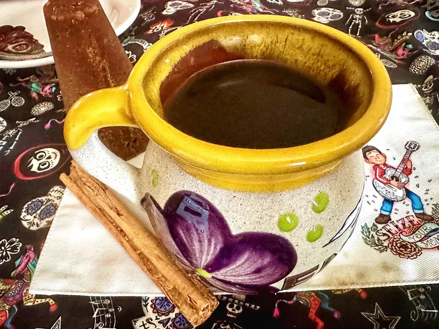

Cafe de Olla

Description
Cafe de olla is the way coffee is made in Mexico. It translates into “pot
of coffee.” It's sweetened with piloncillo, which is similar to dark brown
sugar and found in Hispanic markets, and spiced with a cinnamon stick to
warm you up.
Ingredients
- 4 cups water
- 1/3 cup grated piloncillo, or to taste
- 1 stick Mexican cinnamon
- 1/4 cup ground coffee
Steps
-
Place water, piloncillo, and cinnamon in a pot. Bring to a boil, reduce
heat, and simmer for 8 minutes.
-
Remove from heat, add coffee, and stir well. Cover pot and steep for 5
minutes. Pour through a fine mesh strainer twice or until free of any
coffee granules.